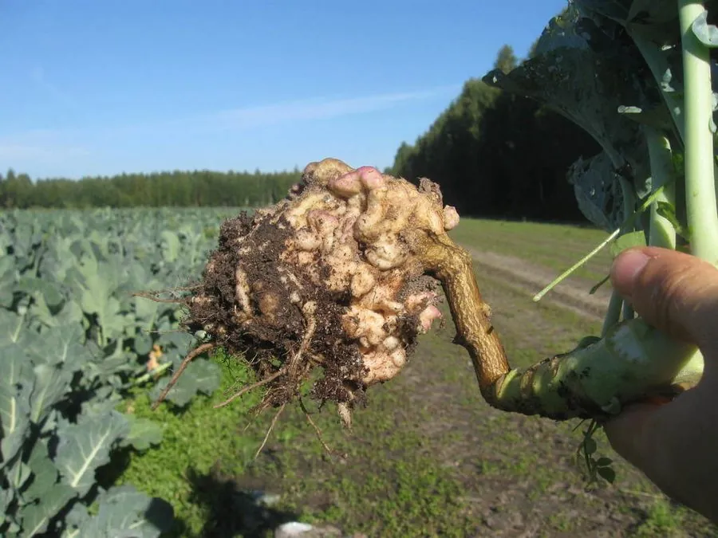

真菌 · 真菌界
十字花科根肿菌 Plasmodiophora brassicae

根肿菌门专性寄生物，侵染十字花科作物根部形成肿瘤，导致萎蔫减产，休眠孢子可在土中存活十余年。
- 分类
- 门根肿菌门纲根肿菌纲目根肿菌目科根肿菌科属根肿菌属
- 栖息环境
- 十字花科作物根内与污染土壤，酸性、潮湿田块发病重
- 地理分布
- 世界性分布，中国南方十字花科蔬菜产区发生普遍
- 保护级别
- 暂无评估；作为土传病原广泛存在
物种志
十字花科根肿菌并非真正的真菌，而是根肿菌门的一类专性细胞内寄生物，亲缘上更接近丝足虫类。它在寄主根细胞内形成多核的原质团，后期分裂为大量休眠孢子，随病根腐烂释放到土壤中。休眠孢子球形、壁厚，可在土中存活 10 年以上。
该菌专性侵染十字花科植物，包括白菜、甘蓝、油菜、萝卜等，根部受刺激膨大形成纺锤形或球状肿瘤，后期腐烂，植株白天萎蔫、生长停滞，严重田块减产过半。它随病残体、土壤、流水与农机具传播，酸性土壤与高湿条件利于发病。防治以轮作非十字花科作物、施用石灰提高 pH、选用抗病品种与无病苗为主；一旦田块污染，极难彻底清除。它不感染人。
形态与习性
- 分类根肿菌门，非真正真菌，专性细胞内寄生
- 休眠孢子球形厚壁，在土壤中可存活 10 年以上
- 寄主白菜、甘蓝、油菜、萝卜等十字花科
- 症状根部膨大形成肿瘤，植株萎蔫矮化
- 传播病残体、土壤、流水与农机具
- 防治轮作、施石灰调 pH、抗病品种
趣味知识
- 根肿菌不是真菌，而是与丝足虫类亲缘更近的专性寄生物，分类上属根肿菌门。
- 它的休眠孢子在土壤中能活十余年，一旦田块染病，轮作多年也难根除。
- 根部肿瘤是寄主细胞被刺激异常分裂膨大形成的，不是菌体本身。
- 酸性土壤利于发病，施用石灰提高 pH 是传统的防治手段之一。